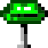

active │ 2026
kloves
Generates a keyboard from six finger measurements. Output is STL plates, an SVG outline, a KiCad board, firmware and PDF paperwork.
catio/internal/pipeline/pipeline.go · Hash()
I'm TK, and I make whatever needs making. I named xorxnor after the XOR and XNOR logic gates: they feel intuitive, but they're built out of simpler gates you can rely on.
The first half follows kloves, from six finger measurements to the website. The second half is the rest of my projects and the lab, one per section.
kloves works in tenths of a key, one number per finger: how far that column moves up or down from flat. With the services doing the hard part, you only think about the fit (it fits… Kloves). This run used −0.4, 0.4, 1.2, 0.3, −0.9 and −0.9, pinky to pointer.
The six numbers get hashed into the run's name, so the same numbers always give the same files.
| file | size | from |
|---|---|---|
| plates.stl | 197K | scad/ |
| profile.svg | 754 | svg/ |
| firmware1/main.c | 475 | firmware/ |
| receipt.pdf | 1.6K | pdf/ |
| report.pdf | 2.2K | pdf/ |
readyvia
The switch plates are a 6 × 4 grid, with each column moved up or down by its finger's number.
Each run comes with firmware built to work with VIA and generated for the layout you picked, so the keymap changes from the browser with no reflashing. Change the design (drop a row, add VIA options) and the firmware changes with it. This is the part that carries your six numbers.
profile.svg is the outline for cutting the case. report.pdf is the run's paperwork, with the circuit board checks for that board.
KiCad lays out the board for the same six numbers, so each set of numbers gets its own board.
ooo is how I started bringing the TUI feel to the web (Departure Mono, forever). In Odd One Out, one of three swatches is a slightly different shade. You get 35 seconds and five hearts, and the difference gets smaller each round. Click a swatch or press 1, 2 or 3.
| player | right | hp |
|---|

stools started as voting tools for iDubbbz's event streams and grew into the overlays I run on my own stream (it's named after the furniture, like the guest's stool or the director's stool). It shares a stylesheet with the xorxnor site. Left is ooo's settings row, right is my on-air clock.
00:0000
xorxnor is my site, built on Payload CMS and customized with elements made for what I post. These are its project cards. I swapped the pictures for code: kloves shows the function that names a run, and grunts shows the line that decides punch or move. The ooo one you can play.
active │ 2026
Generates a keyboard from six finger measurements. Output is STL plates, an SVG outline, a KiCad board, firmware and PDF paperwork.
catio/internal/pipeline/pipeline.go · Hash()
active │ 2026
Counts punches and pace on a XIAO ESP32-S3 with a 0.91" OLED.
grunts/firmware/lib/PunchDetector/PunchDetector.cpp · classify()
level 1 · find the odd one
active │ 2026
A color game drawn in text. Find the swatch that's a shade off before the clock runs out.
ooo/frontend/scripts/lib/odd.js · oddOf(), live
life update │ 2026-10-31
kloves runs on five services and I named every one after my cats, so this is how a shift goes:
pickles looks up every hash, then firecat builds files in a flash. buttercup keeps the key, catio does PDFs for me, and luna just naps on the cache.
That's kloves. From here on it's my other projects and the lab, one per section.
The numbers in these demos are sample data: the card in offload bay, litterbox's stock, bufftime's sets, the punches and the raids.
offload bay is how I give old machines a second life (anything that runs Alpine will do). Plug a camera card into it and it counts down, copies every clip and checks each copy with md5, and only then says it's safe to pull the card. The screen shows one thing at a time so I can read it from across the room.
litterbox is where my simulations live (where kittens try things). This one is a warehouse picker: a gantry arm goes from bin to bin, picks until it's full, then drops off and refills any bin that ran empty. The kitties are my cats, so a different one takes each trip, and its banner from the kit shows who's on.
maze-patterns grows organic patterns with Gray-Scott reaction-diffusion and turns them into sharp shapes as SVG (I was after knurling patterns with it). Here the same steps run slowly in the browser: the pattern grows, a border boxes it in, it goes sharp, then it comes out as SVG. Every load and every color change starts a new one.
| sharp_maze_generator.py | 9.3K |
| sharp_maze_svg.py | 5.7K |
| sharp_maze_c5_d4_s25.svg | 5.8K |
splash-screen draws a 1-bit bitmap one pixel at a time in a random order, then wipes it away. The words over it get the CRT look the xorxnor hero has, with a color fringe and, now and then, a small glitch.
xorxnor tty1
login: tk
bufftime is a workout log that looks like a terminal and keeps everything in the browser. The splash flickers through fire colors. On the log, the set you're typing shows in big block digits.
grunts started as a gag: a speaker that records your gym motion, counts reps and grunts at the end of each one. Now it counts punches from the wrist (it was punchathon, and boxer before that). Its demo is a Go terminal app with a tab each for the punches, where they landed and the heart strap. Press p on it to throw one. The OLED next to it counts the same hits, and a hit is either a punch or a move.
waiting for a hit
typing-speed is an ncurses test from the lab. Type over the first line and hit enter. Stop for five seconds and the line is thrown away.
When someone raids, stools plays the alert in its alert box, saves and renames scenes, and asks before anything that can't be undone.
What else is on the bench right now.
edble (edible, minus the i) is Payload CMS turned around for restaurants: easy to set up, with fine-grained control, and the same idea as kloves, where the ownership goes to the user. It has menus, opening hours, events and a blog, plus a staff admin where what you can edit depends on the location you work at. Every menu also comes out as a print-ready PDF, so the one on the table and the one on the site are always the same menu. It runs on Payload 3, Next.js 16 and PostgreSQL, and the demo seeds a "Demo Bistro" with three locations.
A script in ooo opens every screen of the game in three sizes and two themes and saves each one as SVG and PNG, so a change that breaks a screen shows up in the diff. These four are desktop in noctua.
ooo/output/screens/desktop-noctua · tools/screens
The template every phone idea starts from: Expo and React Native, orange on black, with a green dark mode. Redrawn here in HTML from its components' styles.
000
app-template/components · CRTButton NumberSlider TabSwitcher Counter · theme.js
luna is the web UI and pickles looks up the hash of your six numbers. A new hash goes once to firecat, which generates the files, and buttercup is the only one holding the storage keys. After that the files are cached for good.
browser ─► luna ─► pickles ──► firecat ─► catio
web UI resolver │ generator OpenSCAD,
│ │ gcc, PDF
│ ▼
└─► buttercup ─► storagekloves/README.md
One Go binary serves the OBS overlays at localhost:3000/<scene>. Twitch events and chat both trigger the same scenes. The stream output is always dark.
| default | subtle |
| banner | hype |
stools/overlay/data/effects
I keep one color file per scheme so I can test themes and feel them. Everything on this page pulls its colors, font and marks from there.
xoxn/packages/skins/dist/skins.json
The company site is a terminal. It's Payload CMS and Next.js styled with WebTUI, with a command prompt over the menu and elements built for what I post. The resume lives in the admin and comes out as a one-page PDF, rendered on the server from the same data as the page, with a tailored version for each job I apply to. The project cards in 08 are its markup, and this pamphlet is its own project (showroom).